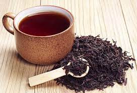
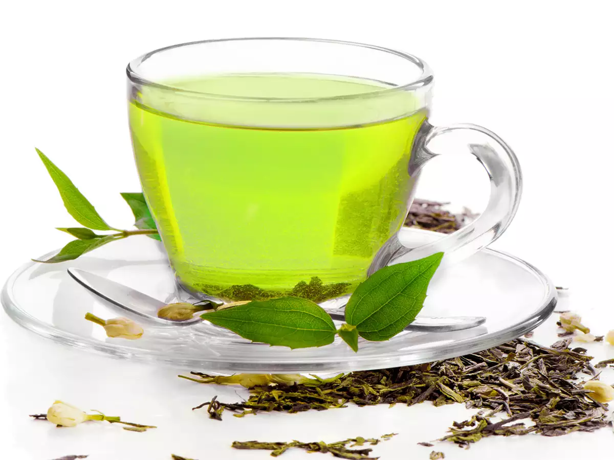

BLACK TEA
Black tea is made from the fermented leaves of the Camellia sinensis plant. These dried leaves and leaf buds are also used to make green and oolong teas.
Black tea contains 2% to 4% caffeine, which affects thinking and alertness. It also contains antioxidants and other substances that might help protect the heart and blood vessels. It has different properties than green tea, which is made from the fresh leaves of the same plant.
People use black tea for improving mental alertness. It is also used for headache, both low and high blood pressure, preventing Parkinson disease, depression, dementia, stroke, and many other conditions, but there is no good scientific evidence to support many of these uses.
Don't confuse black tea with other caffeine sources, including coffee, oolong tea, and green tea. These are not the same.

GREEN TEA
Green tea is made from the Camellia sinensis plant. Its dried leaves and leaf buds are used to make several different teas, including black and oolong teas.
Green tea is prepared by steaming and pan-frying the Camellia sinensis leaves and then drying them.
Green tea is not fermented, so it's able to maintain important molecules called polyphenols, which seem to be responsible for many of its benefits.
It also contains caffeine.Heart disease. Drinking green tea is linked to a reduced risk of clogged arteries. The link seems to be stronger in males than in females.
Cancer of the lining of the uterus (endometrial cancer). Drinking green tea is linked to a reduced risk of developing endometrial cancer.

RED TEARooibos (pronounced ROY-boss) tea is a red herbal tea that comes from the fermented leaves of the Aspalathus linearis shrub, a plant native to South Africa.
1.Caffeine-free 2. Low in tannins 3.Rich in antioxidants 4.Heart health
5. Diabetes management
For a strong immune system, it is crucial in increasing the intake of antioxidants, vitamins and nutrients. Red tea flushes out the toxins, which keeps problems of indigestion and bloating at bay, therefore helping you lose weight faster. Red tea is made of powerful ingredients which is effective in body detoxification. It also contains several good bacteria which are helpful in reversing the ageing blues.

LEMON TEA
The lemon tree is a small evergreen plant that is cultivated predominantly in Southern Asian countries such as Thailand, India and Sri Lanka. It is also grown in the warmer locales further west, such as in Italy, as well as California and Florida in the United States.
This tiny tree has an upright growth pattern, with a few thick branches and rigid thorns. Upon maturation, the fruit is yellow in colour, with a circular to ellipsoidal shape.
The fruit is edible and has a wide range of applications in culinary domains. The pulp and juice are added in baking and cooking several recipes such as marmalades, pies, rice, salads, soups, dals and juices.
Benefts are:Detoxifies The Body
The citric acid content in lemons is remarkably high, aiding in purifying the liver. Consuming lemon tea on an empty stomach in the morning assists in getting rid of all the wastes and toxins accumulated in the liver and thereby detoxifies the body completely.
Boosts Digestive Function
Lemon tea contains only a small portion of carbohydrates that are present in the form of simple sugars and dietary fibers. These fibers function to slow down the processing of simple sugars, thereby enhancing gut health and regulating metabolism. Sipping on a cup of lemon tea after a heavy meal significantly improves digestion.
For more types click here